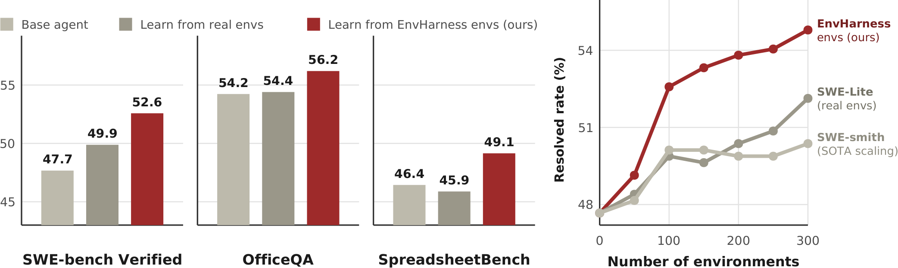
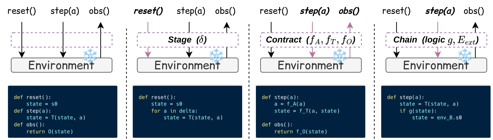

核心判断：EnvHarness 把静态 benchmark 环境包装成可组合的环境 harness，让环境根据 agent 的失败暴露不同起点、交互约束和任务链。Designer 观察 rollout、诊断弱点、写出组件并验证，底层 verifier 保持不变。
问题与动机
固定环境只反复暴露同一种失败，agent 可能记住表面策略，RL 信号却没有针对性。
方法框架
- Stage 改变 episode 起点，Contract 通过 action/observation/transition hooks 改写交互，Chain 串联多个环境或任务。
- Designer 采用 Observe–Diagnose–Write–Validate 循环，从成功/失败轨迹生成组件。
- 组件只依赖统一 reset/step 接口，任务评分仍由原 verifier 完成。
实验与核心结论
- 论文报告 skill learning 与 online RL 在 EnvHarness 环境中均获得收益，并展示跨任务类型、环境数量和模型的扩展实验。
- 组件可以组合但顺序会改变状态分布；因此环境变换本身需要和训练任务一起记录。
- 收益来自针对弱点改变训练分布，而不是修改 verifier 或直接泄漏答案。
EnvHarness 总体流程

三个环境组件

价值与边界
这项工作把‘环境工程’变成可学习、可验证的训练对象；需要注意自动生成组件的成本、组合顺序和与真实环境的差距。